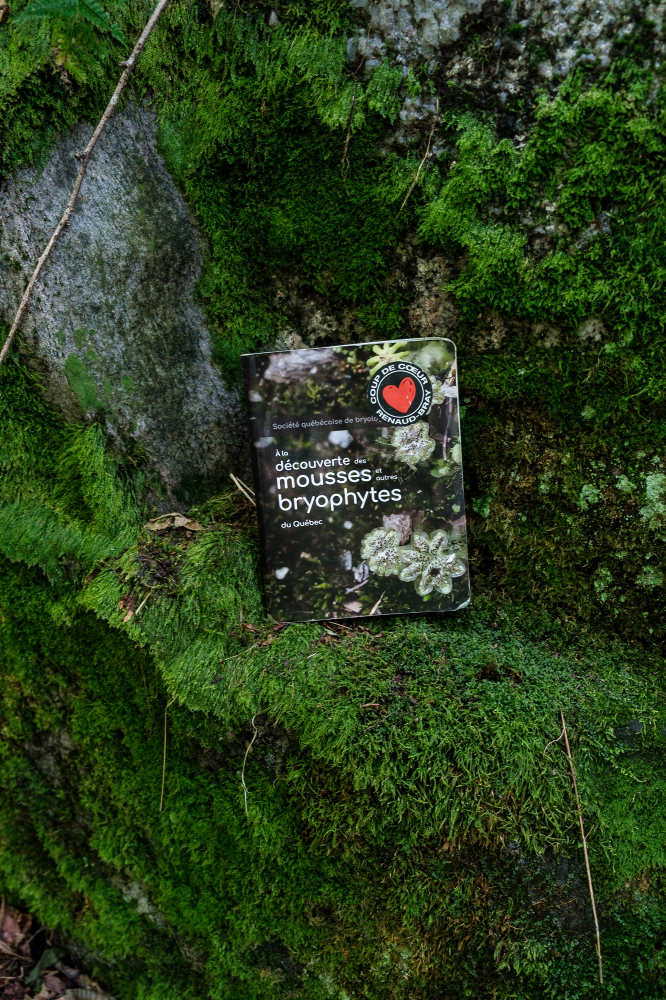

Field Work in a miniature forest
Quebec (Summer 2025)
Look closely at a forest’s landscape, then look even closer. Kneel in the understory and you’ll find a hidden world within the carpet of mosses. These bryophytes are small, non-vascular plants that grow in dense, tightly packed clusters, a habit that helps them hold the moisture essential to their life cycle. Each patch is a miniature ecosystem, home to fungal communities that are easy to overlook but essential to how these forests function. These fungi influence the growth and health of mosses, which in turn play a crucial role in regulating nutrient cycling, shaping the microclimate of the forest floor, supporting biodiversity, and enabling plant establishment. Mosses may also act as reservoirs of inoculum, harboring pathogenic or symbiotic fungi that persist through harsh conditions until a vascular plant host becomes available.
My research begins in the forest understory, where I sample mosses across the bioclimatic zones of Quebec. I then bring their story back to the lab, translating it into DNA sequences and ecological insight. By examining how the fungal communities that call moss their home may shift in a changing environment, I aim to reveal the patterns of these interactions across different forest types.
